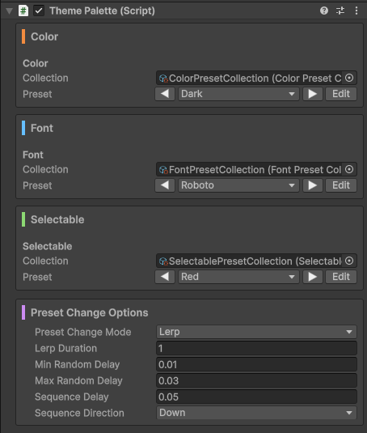

Centralized color, font and selectable theming for Unity UGUI. Changing a color across fifty UI elements should not take fifty clicks. Define every color, font and button style in one place. Bind elements to named entries once and switch the entire scene in a single click, from the editor or at runtime, instant or animated.
Requirements
Unity6 or higherTextMeshProinstalled
Terminology
PresetA single named set of values: colors, font settings or selectable settings.EntryOne named slot inside a Preset. For example a color named "Background" or a font setting called "Header".CollectionA group of Presets that share the same structure of entries. Swapping themes means applying a different Preset from the same Collection.ThemePaletteThe singleton scene component that holds the active Collections and Presets.ReceiverA MonoBehaviour on a scene object that listens to the ThemePalette and applies style changes.BindingThe link between a scene object and a named preset entry.Theme EditorThe editor window for binding scene elements to entries.
Features
The core workflow
Import your colorsConvert any image to a clean color palette or build one by hand.Create preset assetsCreate presets for colors, fonts and selectables independently. All data lives in ScriptableObjects you can reuse across scenes and projects.Create preset collectionsBundle presets into a Collection. Collections keep every preset compatible with each other so theme switches stay clean.Add a ThemePaletteAdd a ThemePalette to your scene. Assign presets or preset collections. All editing and switching happens through this one component.Bind elementsOpen the Theme Editor. Bind elements to entries via drag and drop.Switch themesPreview different themes instantly in edit mode or with animated options at runtime.Edit continouslyPreset edits apply to scene elements instantly. Changes in the scene update editor windows instantly.
Quality of life
Visual workflow, no codeThe entire workflow is visual. No code needed. Drag and drop.Full undo historyEvery editor action is fully undo-aware. Misclick, undo, move on.One binding per prefabMultiple instances of the same prefab collapse into a single entry. Bind once and it hits every instance in the scene.Scene selection syncSelect an object in the scene and it highlights in the Theme Editor. Ping or select straight back without leaving the tool.Live search and filtersLive search, sortable columns and filters keep the list under control no matter how large the scene gets.Hide inactive elementsHide elements that are inactive in the hierarchy. Keep the list short when only part of the UI is active.Ignore elementsMark any element as ignored and hide it from the list on demand. Useful for elements you never want to theme.In-editor visual previewsSprite thumbnails in the color tab, label text rendered in the real font in the font tab, interactive button states in the selectables tab.7 palette sort modesSort the extracted palette by coverage, position, brightness, saturation, hue, temperature or value. Reverse with one click. Sort before you export.
Quick Start
With the included demo presets
Open AndzColorTheme/Demo/Scenes Quickstart/Demo_Quickstart
Open Tools ▸ Theme Editor
In the Theme Editor click Setup Scene
Select the ThemePalette GameObject and assign any preset collections from AndzColorTheme/Demo/Presets/
In the Theme Editor drag elements into the desired groups
Double-click a collection asset to open the Preset Collection Window
Edit the collection: add presets on the left, adjust their settings on the right
Open Tools ▸ Theme Editor
Add a ThemePalette to the scene by clicking Setup Scene in the Theme Editor, or by adding a ThemePalette component to any GameObject
Select the ThemePalette GameObject and assign presets to the inspector slots
In the Theme Editor drag elements into the desired groups
Using the Color Palette Generator
Open Tools ▸ Color Preset Generator
Extract colors from a reference image: drag it into the window or click Import
Add, remove, edit or rearrange the palette entries as needed
Click Export to save the palette as a color preset asset
Ideally create at least a second palette the same way
Select multiple color preset assets in the Project window, right-click and choose Convert to Color Preset Collection
Create a GameObject with a ThemePalette component and assign the Collection
Open Tools ▸ Color Theme Window and drag elements into the desired groups
Components
Color Preset Generator
Tools ▸ Color Preset Generator
Extract colors from any image by clicking Import or dragging an image into the window, or build a palette by hand. Add, remove, edit and rename colors at any time. For best results create multiple presets and bundle them into a Color Preset Collection: select the presets in the Project window, right-click and choose "Convert to Color Preset Collection".
Color Preset Generator
1Importopen a file browser to pick an image and extract its colors2Exportopen a file browser to save the current colors as a color preset3Resetclear all colors from the window4Sort modecycle through the different color sorting modes5Reverseflip the sort order6Add coloradd a new color7Color nameclick to rename a color8Color pickerclick to edit a color9Remove colordelete a color
Preset Collection Window
A Collection bundles multiple presets together and keeps them compatible. There are three types:
Color Preset Collectionfor maskable graphics, UI components with a changeable colorFont Preset Collectionfor TextMeshPro components (TMP_Text, TextMeshProUGUI, TextMeshPro, etc.)Selectable Preset Collectionfor selectables: buttons, toggles, sliders, etc.
A Color Preset Collection can also be created from single presets: select them in the Project window, right-click and choose "Convert to Color Preset Collection". Presets must have the same number of colors; extras are trimmed.
Colors
1Preset listall presets in the collection with their names: click one to show it2Rename presetclick to rename the selected preset3Remove presetremove the preset from the collection. this deletes the nested preset asset; undo it with Unity's undo history if it was a mistake4Color listthe colors of the preset: name, order and count are the same for every preset in the collection5Rename colorclick to rename a color6Color pickerclick to edit a color7Pinghighlight the collection asset in the Project window9Settingsselect the Settings asset that holds the styling options for this plugin's editor windows10New preset nametype the name for the preset you want to add11Add presetadd a new preset to the collection12New color nametype the name for the color you want to add13Add coloradd the color to every preset14Remove colorremove the color from every preset
Fonts
1Preset listall presets in the collection with their names: click one to show it2Rename presetclick to rename the selected preset3Remove presetremove the preset from the collection. this deletes the nested preset asset; undo it with Unity's undo history if it was a mistake4Font listthe fonts of the preset: name, order and count are the same for every preset in the collection5Rename fontclick to rename a font6Font settingscan be edited7Pinghighlight the collection asset in the Project window9Settingsselect the Settings asset that holds the styling options for this plugin's editor windows10New preset nametype the name for the preset you want to add11Add presetadd a new preset to the collection12New font nametype the name for the font you want to add13Add fontadd the font to every preset14Remove fontremove the font from every preset
Selectables
1Preset listall presets in the collection with their names: click one to show it2Rename presetclick to rename the selected preset3Remove presetremove the preset from the collection. this deletes the nested preset asset; undo it with Unity's undo history if it was a mistake4Setting listthe settings of the preset: name, order and count are the same for every preset in the collection5Rename settingclick to rename a setting6Selectable settingscan be edited7Pinghighlight the collection asset in the Project window9Settingsselect the Settings asset that holds the styling options for this plugin's editor windows10New preset nametype the name for the preset you want to add11Add presetadd a new preset to the collection12New setting nametype the name for the setting you want to add13Add settingadd the setting to every preset14Remove settingremove the setting from every preset
Color Theme Window
Tools ▸ Color Theme Window
The main workspace for binding scene elements to entries. Tabs across the top switch between the Color, Font and Selectable domains. The left pane lists unassigned elements, the right pane has one group per entry. Drag rows across to bind them.
No ThemePalette in scene
→Setup Scenecreate a new GameObject with a ThemePalette component in the scene
No preset assigned
→Shown separately for each of the three tabs.→Assign a collection or at least a single preset for that category in the ThemePalette component's inspector.
Maskable Graphics tab
1Maskable Graphics tabthe one currently open2TMP_Text tabswitch to the fonts view3Selectables tabswitch to the selectables view4Prefab mode toggleswitch between showing normal graphics and graphics that belong to a prefab or prefab variant5Edit presetif the preset is part of a collection, open the Preset Collection Window with this preset selected; if it is a single preset, highlight its asset in the Project window6Preset switchshows the name of the current preset: click to open a dropdown and pick another preset from the collection, or use the left/right arrows to step through the presets7Sort modecycle through the different sort modes for the graphics list8Reverse sort toggleflip the order of the graphics list9Preview toggleturn previews on or off. Graphics tab shows sprite previews. TMP_Text tab draws font entries in the selected font. Selectables tab shows an interactive square with the button states (normal, hover, mouse down)10Hide inactive togglehide graphics that are inactive in the hierarchy (helpful for keeping the list short when only part of the UI is active)11Hide ignored togglehide graphics that are marked as ignored (see point 15)12Settingsselect the Settings asset that holds the styling options for this plugin's editor windows13Refreshrebuild the window. some changes in the scene or assets are not picked up automatically14Pingsingle click pings the graphic in the hierarchy. double click selects it so its inspector opens15Ignore togglemark the graphic as ignored so it can be hidden when "hide ignored" is on (see point 11)16Color previewshows the current color of the graphic17Sprite previewshows the current sprite of the graphic in its original color (if it has one)18Graphic namethe name of the graphic's GameObject19Component typethe component type of the graphic20Assigned groupsthe list of color entries and which one each graphic is assigned to
TMP_Text tab
(only showing what is different from the graphics tab)
1Text previewshows the text that is typed into the component2Font entry namethe name of the font entry in the preset (when preview is on, it is drawn in the font chosen in that entry)3Font summarya short summary of the font settings
Selectables tab
(only showing what is different from the graphics tab)
1Preview buttonan interactive square that demonstrates the button states (normal, hover, mouse down)2Component typethe type of selectable3Entry namethe name of the entry in the preset4Transition typethe transition type of the entry
Color Palette (ThemePalette)
The scene component that holds the active collection and preset for each domain. One per scene. The inspector exposes a collection field and a preset picker per domain. Switch a preset and the scene re-themes live.
ThemePalette inspector

Set a Collection or single preset per domain. When a Collection is assigned the preset field becomes a dropdown. Preset Change Options have two independent axes. Combine them freely.
Trigger Order: when each receiver starts
Simultaneousall at once (default)Random Delayeach element waits a random delay between the min and maxSequencesorted by position in the chosen direction, each offset by Sequence DelayCascadedelay scales with hierarchy depth. parents change before children
Apply Mode: how each element transitions once it starts
Snapinstant (default)Lerpsmoothly interpolates over Lerp Duration seconds using the selected Ease curve. font size and spacing lerp; font asset and style switch immediately
Runtime / Scripting API
Switch themes from code by calling methods on ThemePalette.I. Pass a preset to switch immediately or include a PresetChangeOptions to drive an animation. Color, font and selectable presets are independent. Switch them in any order or all in the same frame.